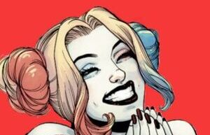
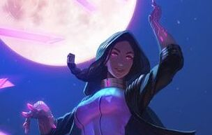

Descuentos 20%


batman
Bruce Wayne es el único personaje que se identifica como Batman y aparece en Batman, Detective Comics, Batman y Robin, y Batman: The Dark Knight. Dick Grayson vuelve al manto de Nightwing
Ver más

harley quinn
Bruce Wayne es el único personaje que se identifica como Batman y aparece en Batman, Detective Comics, Batman y Robin, y Batman: The Dark Knight. Dick Grayson vuelve al manto de Nightwing
Ver más
+
Zatanna
Zatanna es hija de un aventurero John Zatara y su esposa Sindella, y un miembro de la mística de la tribu de los brujos llaman a los Ocultos o Homo Magi.Zatanna nacio el 10 de mayo, tiene un carácter rebelde
Ver más